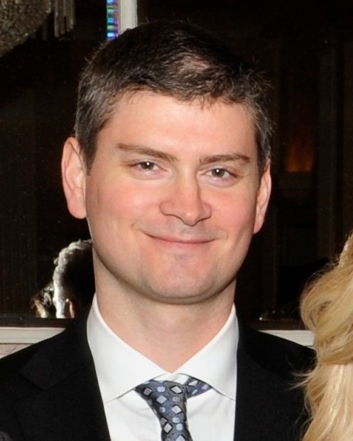

La serie fue creada por Michael Schur, un productor y guionista estadounidense. Schur es conocido principalmente por su participacion en The Office y Parks and Recreations asi como tambien ser el creador de Brooklyn 99
The Good Place se estrenó el 19 de septiembre de 2016 y finalizo el 30 de enero de 2020. Fue transmitida por la cadena NBC, aunque en varias regiones entre las cuales se incluye Argentina, la serie se distribuyo mediante la plataforma de streaming Netflix.